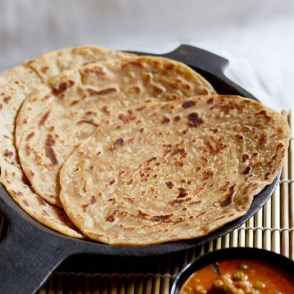

Malabar paratha also known as Kerala parotta are crisp, flaky unleavened layered flatbread from Kerala.
Ingredients
- 1 cup whole wheat flour
- 1 cup all purpose flour
- 2 tablespoon oil
- ¼ teaspoon baking soda
- ¾ to 1 cup hot water
- 1 to 2 teaspoon sugar
- ¾ teaspoon salt or as required
Instructions
Making Kerala Paratha Dough
- step 1
- Seive both the whole wheat flour and all purpose flour with baking soda.
- step 1
- Make a well and add sugar, salt and oil. Add hot water.
- step 1
- First mix with a spoon and then knead the dough till soft, smooth and elastic.
- step 1
- Cover with a moist cloth and keep aside for 45 minutes to 1 hour.
Rolling Kerala Paratha
- step 1
- Divide into 7 to 8 balls. Dust the working surface with flour. Roll each ball as thinly as possible into a large round.
- step 1
- Smear or apply oil on the entire surface of the rolled dough.
- step 1
- Hold the rolled disc from the top on both sides and pleat them till bottom.
- step 1
- Now roll them like a spiral and press the last edge onto the center of the roll.
- step 1
- Make all the spiralled balls this way and cover with wet cloth and keep aside for 15 minutes.
Making Kerala Parotta
- step 1
- Heat tava or griddle. Take each rolled ball and on a dusted working surface, roll each ball into a paratha of 4-5 inches.
- step 1
- Heat a tava or a griddle. Place the paratha on a hot tava and fry on both sides drizzled with some oil on top and the edges till they are crisp and browned.
- step 1
- You will see the layers easily and they will be browned.
- step 1
- When serving, squish the kerala parotta holding them between your palms so that the layers come up on the surface.
- step 1
- Serve the kerala paratha with any indian vegetable or lentil curry or dal.